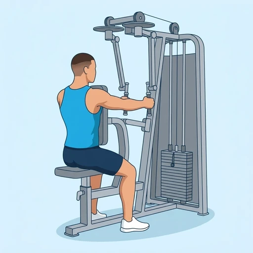
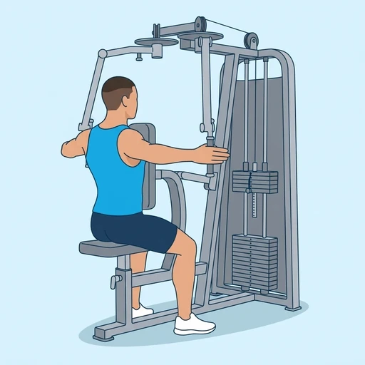
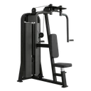

Machine Reverse Fly
A seated machine exercise for the rear deltoids, also known as the reverse pec deck: facing the pad, you sweep the two handles out and back in a wide arc against the weight stack. The pad keeps the torso still, so the work stays on the back of the shoulders and the muscles between the shoulder blades.
Shoulders · Reverse Fly Machine · Beginner


Muscles worked by the Machine Reverse Fly
Primary
Secondary
Also called: rear deltoid, posterior delt, rear delt, back delt, posterior deltoid.
Equipment

Reverse Fly MachineAlso called: rear delt machine, rear deltoid fly, reverse pec deck, rear delt fly, rear fly machine.
How to do the Machine Reverse Fly
- Adjust the seat so the handles are at shoulder height, then sit facing the machine with your chest against the pad.
- Grip the handles with your arms reaching forward and a slight bend in the elbows.
- Keep your shoulders down and away from your ears and brace your trunk.
- Sweep the handles out and back in a wide arc, leading with the elbows, until your arms are roughly in line with your shoulders.
- Squeeze your shoulder blades together briefly without leaning back off the pad.
- Return the handles forward slowly and repeat for the planned repetitions.
Form tips
- Lead with the elbows rather than pulling with the hands, so the rear deltoids do the work and not the biceps.
- Keep the chest on the pad and the neck relaxed; leaning back or shrugging moves the load to the upper trapezius.
- Choose a weight you can lower under control; a lighter load with a slow return works the rear deltoids better than a heavy swing.
At a glance
| Body part | Shoulders |
|---|---|
| Category | Strength |
| Force type | Pull |
| Mechanic | Isolation |
| Difficulty | Beginner |
| Equipment | Reverse Fly Machine |
| Goals | Hypertrophy |
| Tags | Knee safe, No axial load, Lower back safe, Shoulder safe |
| MET | 5.0 (metabolic equivalent, for calorie estimates) |
| Unilateral | No |
| Bodyweight | No |
| Dataset id | machine-reverse-fly |
Machine Reverse Fly in German & Spanish
| German | Maschine Reverse Fly |
|---|---|
| Spanish | Apertura Inversa en Máquina |
Descriptions, instructions and tips ship in all three languages in the JSON.
Related exercises
Exercise data (JSON)
The record below is exactly what exercises.json ships for this exercise — names, descriptions, instructions and tips in English, German and Spanish.
{
"id": "machine-reverse-fly",
"name_en": "Machine Reverse Fly",
"name_de": "Maschine Reverse Fly",
"name_es": "Apertura Inversa en Máquina",
"description_en": "A seated machine exercise for the rear deltoids, also known as the reverse pec deck: facing the pad, you sweep the two handles out and back in a wide arc against the weight stack. The pad keeps the torso still, so the work stays on the back of the shoulders and the muscles between the shoulder blades.",
"description_de": "Eine Maschinenübung im Sitzen für die hinteren Schultermuskeln, auch als Reverse Pec Deck bekannt: Mit dem Gesicht zum Polster führst du die beiden Griffe in einem weiten Bogen nach außen und hinten gegen den Gewichtsblock. Das Polster hält den Oberkörper ruhig, sodass die Arbeit auf der Schulterrückseite und den Muskeln zwischen den Schulterblättern bleibt.",
"description_es": "Un ejercicio sentado en máquina para los deltoides posteriores, también conocido como pec deck inverso: de cara a la almohadilla, llevas las dos empuñaduras hacia fuera y atrás en un arco amplio contra la pila de pesas. La almohadilla mantiene el torso quieto, de modo que el trabajo se queda en la parte posterior de los hombros y en los músculos entre los omóplatos.",
"category": "strength",
"force_type": "pull",
"mechanic": "isolation",
"difficulty": "beginner",
"equipment": "reverse_fly_machine",
"body_part": "shoulders",
"primary_muscles": [
"posterior_deltoid"
],
"secondary_muscles": [
"rhomboids",
"trapezius"
],
"goals": [
"hypertrophy"
],
"tags": [
"knee_safe",
"no_axial_load",
"lower_back_safe",
"shoulder_safe"
],
"variation_group": "reverse-fly",
"is_unilateral": false,
"is_bodyweight": false,
"instructions_en": [
"Adjust the seat so the handles are at shoulder height, then sit facing the machine with your chest against the pad.",
"Grip the handles with your arms reaching forward and a slight bend in the elbows.",
"Keep your shoulders down and away from your ears and brace your trunk.",
"Sweep the handles out and back in a wide arc, leading with the elbows, until your arms are roughly in line with your shoulders.",
"Squeeze your shoulder blades together briefly without leaning back off the pad.",
"Return the handles forward slowly and repeat for the planned repetitions."
],
"instructions_de": [
"Stelle den Sitz so ein, dass die Griffe auf Schulterhöhe sind, und setze dich mit der Brust am Polster zur Maschine.",
"Greife die Griffe mit nach vorn gestreckten Armen und leicht gebeugten Ellbogen.",
"Halte die Schultern unten und weg von den Ohren und spanne den Rumpf an.",
"Führe die Griffe in einem weiten Bogen nach außen und hinten, die Ellbogen voran, bis deine Arme ungefähr auf einer Linie mit den Schultern sind.",
"Drücke die Schulterblätter kurz zusammen, ohne dich vom Polster nach hinten zu lehnen.",
"Führe die Griffe langsam nach vorn zurück und wiederhole für die geplante Anzahl an Wiederholungen."
],
"instructions_es": [
"Ajusta el asiento para que las empuñaduras queden a la altura de los hombros y siéntate de cara a la máquina con el pecho contra la almohadilla.",
"Agarra las empuñaduras con los brazos estirados al frente y una ligera flexión en los codos.",
"Mantén los hombros bajos y alejados de las orejas y aprieta el tronco.",
"Lleva las empuñaduras hacia fuera y atrás en un arco amplio, guiando el movimiento con los codos, hasta que los brazos queden aproximadamente en línea con los hombros.",
"Junta los omóplatos brevemente sin echarte hacia atrás separando el pecho de la almohadilla.",
"Devuelve las empuñaduras hacia delante despacio y repite el número de repeticiones previsto."
],
"tips_en": [
"Lead with the elbows rather than pulling with the hands, so the rear deltoids do the work and not the biceps.",
"Keep the chest on the pad and the neck relaxed; leaning back or shrugging moves the load to the upper trapezius.",
"Choose a weight you can lower under control; a lighter load with a slow return works the rear deltoids better than a heavy swing."
],
"tips_de": [
"Führe die Bewegung mit den Ellbogen statt mit den Händen, damit die hinteren Schultermuskeln arbeiten und nicht der Bizeps.",
"Halte die Brust am Polster und den Nacken entspannt; Zurücklehnen oder Schulterzucken verlagert die Last auf den oberen Trapezmuskel.",
"Wähle ein Gewicht, das du kontrolliert senken kannst; eine leichtere Last mit langsamer Rückführung trainiert die hinteren Schultermuskeln besser als schwungvolles Reißen mit viel Gewicht."
],
"tips_es": [
"Guía el movimiento con los codos en lugar de tirar con las manos, para que trabajen los deltoides posteriores y no los bíceps.",
"Mantén el pecho en la almohadilla y el cuello relajado; si te echas hacia atrás o encoges los hombros, la carga pasa al trapecio superior.",
"Elige un peso que puedas bajar con control; una carga más ligera con un retorno lento trabaja mejor los deltoides posteriores que un balanceo con mucho peso."
],
"met": 5.0,
"images": {
"flat": {
"start": "images/flat/machine-reverse-fly-start.webp",
"peak": "images/flat/machine-reverse-fly-peak.webp"
}
}
}Fetch just this exercise
const { exercises } = await fetch(
"https://exercise-dataset.com/exercises.json"
).then(r => r.json());
const ex = exercises.find(e => e.id === "machine-reverse-fly");Free for personal and commercial in-app use with attribution (“Exercise data by RepDB”) — see the license and ready-made attribution snippets. Redistributing the data as a dataset or API is not permitted.